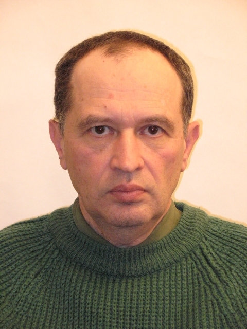

Evgenii Vol, PhD.
11.04.1947 - 25.10.2016

Graduated from Kharkov State University in 1970.
PhD Phys & Math, ILTPE, 1988.
Submitted thesis: Self-localized electron states in nonlinear medium.
Fields of Scientific Interests:
-
Condensed Matter Physics:
- a) Superconductivity (in particular Josephson effect in Multi-terminal SQUIDS),
- b) Magnetic excitons in layer systems,c)Bose-Einstein condensation in atomic traps.
-
Quantum theory of open systems and its applications to various soft sciences: biology, psychology and so on.
Selected publications on Condensed Matter Physics:
- R. de Bruyn Ouboter, A.N. Omelyanchouk, E.D. Vol, Multi-terminal SQUID controlled by the transport current, Physica B 205, p.153-162 (1995).
- R. de Bruyn Ouboter, A.N. Omelyanchouk, E.D. Vol, Dynamical properties of the Josephson multiterminals in an applied magnetic field, Physica B 239, p. 203-215.
- E.D. Vol, S.I. Shevchenko, Magnetic exciton in two layer system, Fizika nizkikh temperatur v.24, p.1017-1020 (2000).
- S.I. Shevchenko, E.D. Vol, The metastable bound state of a pair of two dimensional spatially separated electrons in antiparallel magnetic fields, Journal Physics:Condenced Matter 15, p. 8455-8463 (2003).
- E.D. Vol, Diagnostics of macroscopic quantum states of Bose-Einstein condensate in double-well potential by nonstationary Josephson effect, Low Temperature Physics;Feb2005, Vol. 31 Issue 2, p97
Selected publications on Quantum theory of open systems:
- E.D. Vol, Continuous Measurements in a Composite Quantum system and possible Exchange of Information between its parts, Phys.Rev. A71, 042109, (2005)
- E.D. Vol, Semiclassical Quantization of Non-Hamiltonian Dynamical Systems without Memory,Phys.Rev.A73, 062113,(2006)
- E.D. Vol, The Characteristic Noise connected with Continuous Measurement in Classic system without Memory, Int. J. of Theor. Phys, 48.292 (2009)
- E.D. Vol, Quantum Theory as a Relevant Framework for the Statement of Probabilistic and Many-Valued Logic, Int. J. Theor. Phys. 52,514, (2013)
Considerable number of publications on the above topics have been published yet in Reseach Gate and Arxiv. The interested reader can refer to these sources for more detail information.